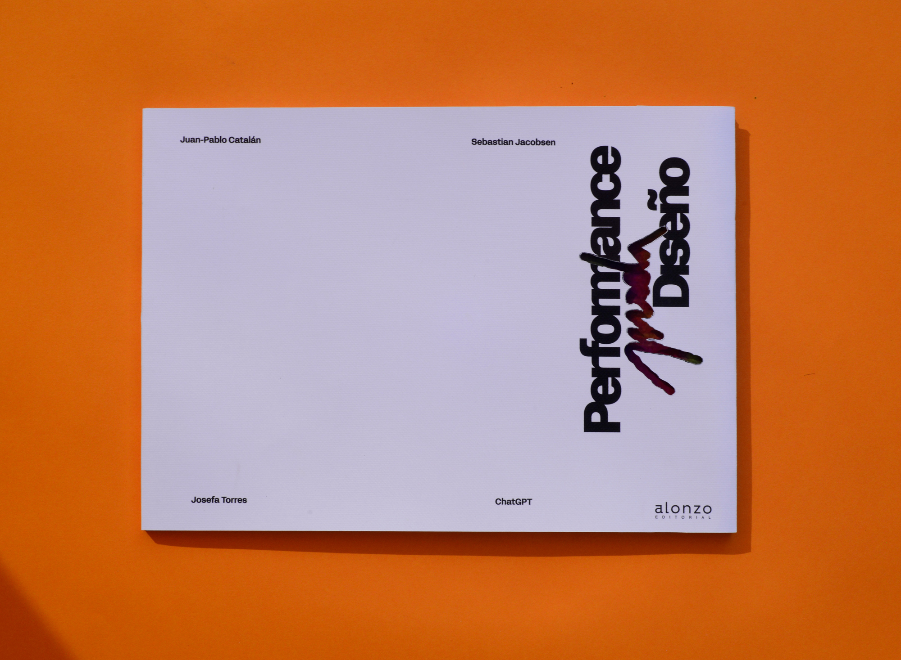

Tipografía y Diagramación

Rama de la lingüística que se encarga de registrar y describir de forma gráfica la distribución geográfica de los dialectos y sus variantes.
En cada capítulo, un participante desarrolla un tema e integra comentarios de los demás mediante recursos gráficos específicos.
[presiona en el libro o alguna flecha para navegar en él]
VISTA DE MINIATURAS — SPREADS
PORTADA • 01 / 84

FFF Acid Grotesk - Light
Capítulo 1
Juan-Pablo Catalán
Capítulo 2
Sebastian Jacobsen
Capítulo 3
Josefa Torres